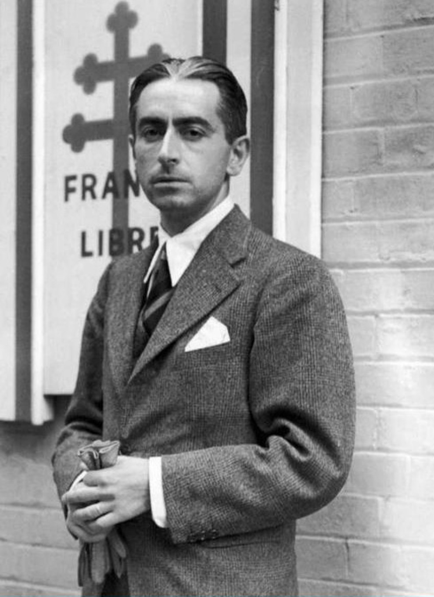

Nom : Pierre Brossolette
Dates : 25 juin 1903 – 22 mars 1944
Nationalité : Française
Pierre Brossolette est l’un des plus grands intellectuels et stratèges de la Résistance française. Journaliste, homme politique et patriote, il rejoint très tôt la lutte clandestine contre l’occupation allemande. Son rôle dans la coordination entre les réseaux de Résistance et la France Libre en fait une figure majeure de la lutte contre le nazisme.
Dès 1940, Brossolette s’engage dans la Résistance. Il devient l’un des dirigeants du mouvement Combat et joue un rôle essentiel dans l’unification des réseaux. Il est ensuite nommé responsable du Bureau des opérations aériennes (BOA), chargé des liaisons entre Londres et la Résistance intérieure.
Il effectue plusieurs missions clandestines en France occupée, organise des parachutages, coordonne les réseaux et contribue à structurer la Résistance en vue du débarquement allié.
Arrêté par la Gestapo en février 1944, Pierre Brossolette subit des interrogatoires d’une extrême violence. Pour ne pas livrer ses camarades, il se jette par une fenêtre du siège de la Gestapo à Paris. Il meurt de ses blessures le 22 mars 1944.
Brossolette est l’un des symboles les plus forts du courage et du sacrifice de la Résistance française. En 2015, il entre au Panthéon aux côtés de Jean Moulin, Germaine Tillion et Geneviève de Gaulle-Anthonioz, consacrant son rôle essentiel dans la lutte contre le nazisme.